KT Wallet — iOS QA 报告
配套文档:Android QA 报告
结论摘要
iOS 端整体可用:构建、启动、真实 Wallet Core 派生、创建/备份/验证钱包、Face ID 鉴权、收款、转账校验、设置全套、离线签名器模式,全部按预期工作,无崩溃。 上一轮在 Android 上修的 12 项在 iOS 上全部生效。
但这一轮挖出两个此前 Android 遍历漏掉的 P1,两个平台都存在: 代币详情页显示写死的 3,120 USDT 余额,网络设置显示写死的 RPC 延迟与健康状态。 两者都不是 iOS 独有——是我上一轮没点到 / 没核实的地方。另有 iOS 侧 FLAG_SECURE 无等价物、鉴权时机与 Android 不一致等 3 项平台差异。
docs/TESTING.md:报告不含助记词、私钥、PIN 或令牌。
iOS 无法阻止截图,备份页与查看助记词页在测试中确实被完整捕获——
这些截图已即时删除,不进入本报告。
新发现
F-15 P1 两平台 代币详情页显示写死的 3,120 USDT 余额
现象:钱包实际余额处处为 0(首页 $0.00、0 USDT),
但点任意资产行进入的详情页显示 3,120.00 USDT ≈ $3,120.00,
价格 $1.00、24h +0.02%、合约 TR7NHq…gjLj6t —— 全是假的。
根因:apps/kt_wallet/lib/src/screens/assets_screens.dart:343
的 TokenDetailScreen 是 const 且不接受任何参数:
标题写死 'USDT'、余额写死 '3,120.00 USDT'、合约写死为常量
_contract。而 home_screen.dart:1319 与
assets_screens.dart:271 都是无参 context.push('/token') ——
所以首页和资产 tab 的每一行资产,点开的都是同一个假的 USDT 页面。
为什么 Android 那轮没发现:我遍历时点了资产 tab 和链标签, 但没有点开任何一条资产行。这是我上一轮的覆盖缺口,不是 iOS 独有问题。
影响:钱包向用户展示了一笔他并不持有的余额,并提供 Send / Receive 入口。 这是本次两轮 QA 里最具误导性的一处。
F-16 P1 两平台 网络设置显示写死的 RPC 延迟与健康状态
现象:Ethereum 86 ms、Polygon 112 ms、TRON 64 ms
显示为绿色健康;Base / Arbitrum / Avalanche 恒为 —;
Solana 恒为红色 Timeout。
根因:settings_screens.dart:1610-1652 里这些全是字符串字面量,
没有任何测量:
(ChainColors.ethereum, Coin.eth, 'Ethereum', …, '86 ms', true),
(ChainColors.tron, Coin.tron, 'TRON', …, '64 ms', true),
(ChainColors.solana, Coin.solana, 'Solana', …, l10n.rpcTimeout, false),
判定性反证:Android 那轮的 Solana Devnet 链上测试 4 笔签名全部成功,余额按手续费正常下降 —— 节点完全健康, 而 UI 一直显示 Timeout。反过来,两台不同设备、不同平台显示完全相同的 86/112/64 ms,也说明它不可能是实测值。
更正:我在 Android 报告里把这一块写成了"RPC 实时延迟探测",那是错的, 已在该报告中更正。
影响:用户会据此判断节点是否可用并去切换节点,而数据是编的; Solana 永久显示故障尤其糟糕。
F-17 P2 两平台 隐私遮罩残留 Libra 的天平图标本次已修
现象:上一轮我把 "Libra Protection is active" 文案改成了 KT Wallet, 但遮罩层还硬编码了一个 ⚖(天秤座的天平) 前缀 —— 正是旧品牌的符号。 iOS 上 Face ID 弹窗时露出的遮罩让它现了形。
范围:4 处,两个平台都有 ——
apps/{kt_wallet,cold_signer}/ios/Runner/AppDelegate.swift 与
apps/{kt_wallet,cold_signer}/android/.../MainActivity.kt。
已全部移除(遮罩上方本来就有 App 图标,不需要额外字形)。iOS 重建后复验通过,
Android 重新构建通过。
iOS / Android 平台差异
D-1 P2 iOS 无 FLAG_SECURE 等价物,助记词界面可被完整截图
上一轮给 Android 的助记词界面加了 FLAG_SECURE(截图变纯黑)。
iOS 没有对应 API,SecureScreen 在 iOS 是诚实的 no-op
(代码注释已写明)。实测:备份页、查看助记词页、以及整个离线签名器模式,
在 iOS 上都能被 simctl io screenshot 完整捕获 —— 包括那句
"Don't screenshot or photograph it" 本身。
这不是可以"修好"的缺陷,但可以缓解,且是 iOS 银行类 App 的通行做法:
UIApplication.userDidTakeScreenshotNotification—— 事后检测到截图, 立刻遮盖内容并警告用户"你刚刚截图了助记词,请立即转移资产"。UIScreen.main.isCaptured+capturedDidChangeNotification—— 录屏/投屏时主动遮盖(这个是可以真正阻止的)。
App 已经有 AppDelegate 的隐私遮罩基础设施,接上这两个通知成本很低。
D-2 P3 创建钱包时的鉴权时机两端不一致
Android CoreCryptoPlugin.kt:63 在 storeWallet 外面套了一层鉴权,
创建钱包会弹 BiometricPrompt;iOS CoreCryptoPlugin.swift:42 没有 ——
只把 requireAuth 传给 Keychain 的访问控制,创建时不弹窗。
安全上 iOS 这样并不弱:实测读取(查看助记词)确实弹了 Face ID, Keychain 访问控制是生效的;而给用户刚生成的新密钥做写入鉴权本来意义就不大。 但同一个 API 在两端执行不同策略,应该显式对齐并写进文档,而不是各写各的。
D-3 P3 Wallet Core 版本两端不一致
iOS 走 CocoaPods TrustWalletCore 4.7.0,Android 走 GitHub Packages
com.trustwallet:wallet-core:4.6.13。目前派生结果一致,
但密码学库在两端跑不同版本是应当收敛的,尤其在签名逻辑改动之后。
上一轮 12 项修复的 iOS 复验
| # | 修复 | iOS 表现 |
|---|---|---|
| F-13 | TRON 广播 protobuf + broadcasthex | 通过 Swift 签名器已同步改造,与 Kotlin 输出同形状;链上验证见 Android 报告 |
| F-1 | 助记词界面 FLAG_SECURE | iOS 不适用 平台无此能力,见 D-1 |
| F-5 | 隐私遮罩品牌串 | 通过 显示 "KT Wallet Protection is active";另发现 ⚖ 残留,见 F-17 |
| F-3 | 隐私模式遮蔽资产行 | 通过 总额与每行数量/法币值全部遮蔽 |
| F-4 | 收款页复制地址 | 通过 按钮存在,simctl pbpaste 校验剪贴板内容与屏幕地址逐字一致 |
| F-12 | 代币管理空状态 | 通过 "No custom tokens yet — tap + to add one" |
| F-8 | 通讯录首次空态 | 通过 "No contacts yet — tap + to add one" |
| F-2 | 英文 ICU plural | 通过 "1 wallet · limit 20" |
| F-6 | 金额去前导零 | 通过 Max→输入 1.5 得到 1.5,非 01.5 |
| F-10 | 链标签可点 | 通过 跳转网络设置 |
| F-7 | 相机文案本地化 | 通过 模拟器无相机,走的正是该降级分支 |
| F-14 | TronGrid Error 透传 | 通过 纯 Dart / Go,与平台无关 |
iOS 侧验证通过的能力
- CocoaPods 装配真实
TrustWalletCore 4.7.0,全程未用 mock - 设备模式选择器 → 联网钱包 / 离线签名器(含飞行模式确认弹窗)
- 创建钱包三步:风险提示 → 12 词 BIP-39 → 抽词验证(未选中时 Confirm 禁用)
- Face ID:查看助记词弹窗并放行;App 锁在冷启动拦截,通过后进入首页
- i18n:模拟器区域为日文时整个 App 呈日文;切到英文后即时全量切换
- 收款:QR、地址、复制(剪贴板逐字校验)、TRON 网络警告
- 转账:粘贴按钮读剪贴板并校验 "Valid address · TRON network"、余额不足拦截、Next 正确禁用、三档手续费
- 设置全套:安全(App 锁 / 验证方式显示 "Face ID / Biometrics" / 自动锁定 / 隐私模式)、 货币、语言、设备模式、通讯录、网络、代币管理
- 网络设置:主网/测试网切换、每链网络、自定义网络入口、网关配置(延迟数字是假的,见 F-16)
- 离线签名器模式完整渲染,可从欢迎页切回设备模式选择器
截图
启动与本地化
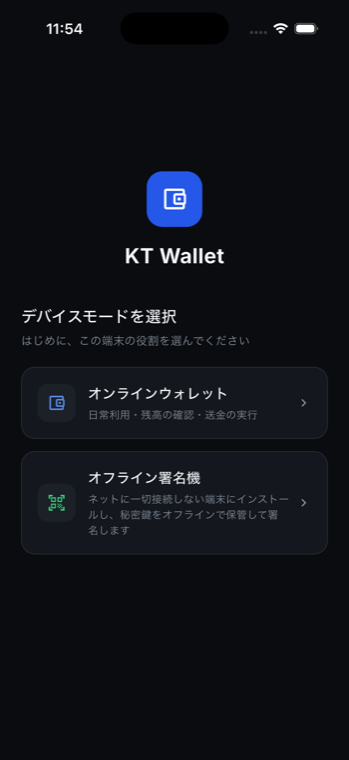
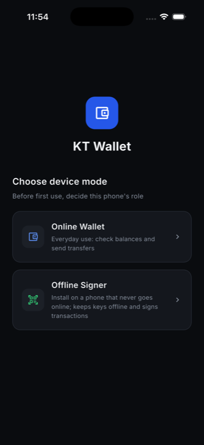
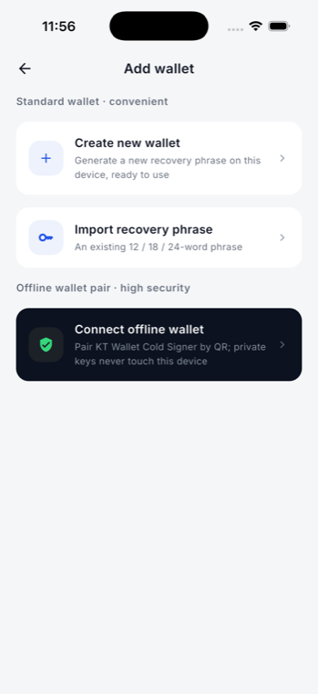
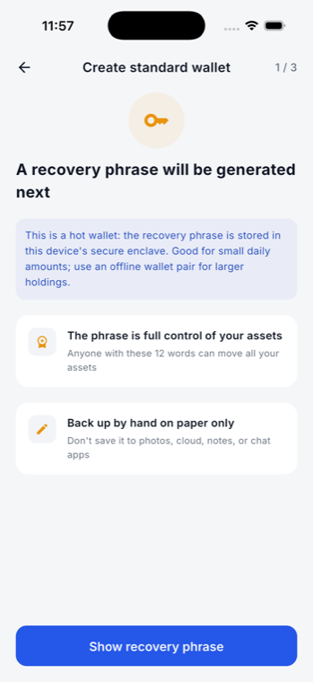
备份页(2/3)与抽词验证(3/3)会显示 BIP-39 词表,按安全规则不纳入报告。
首页与钱包
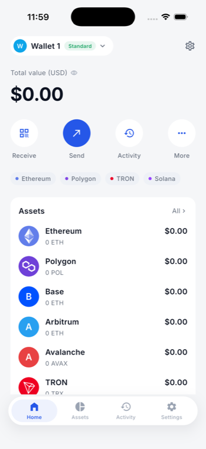
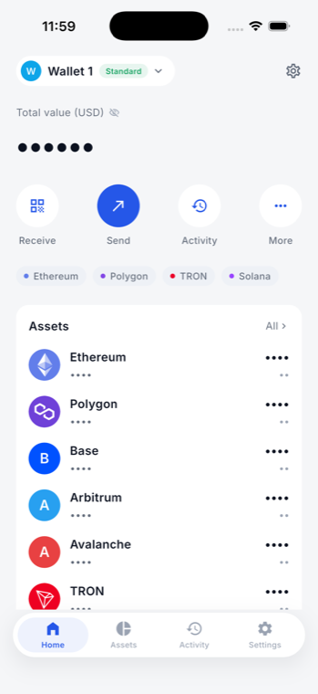
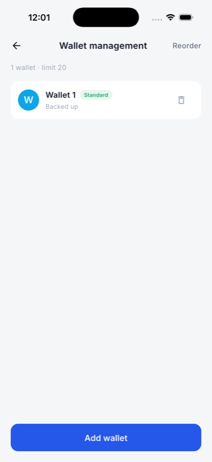
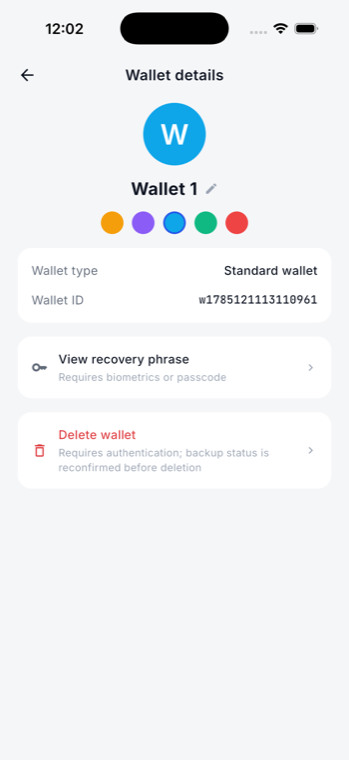
两个 P1
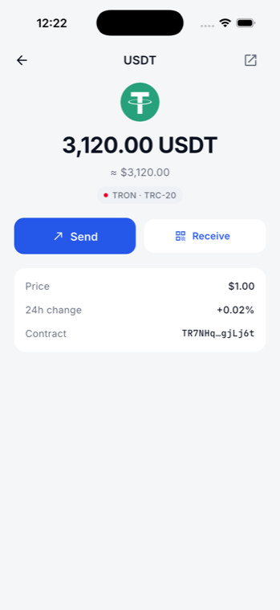

收款与转账
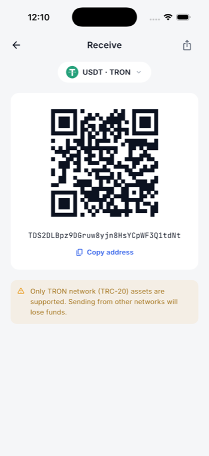
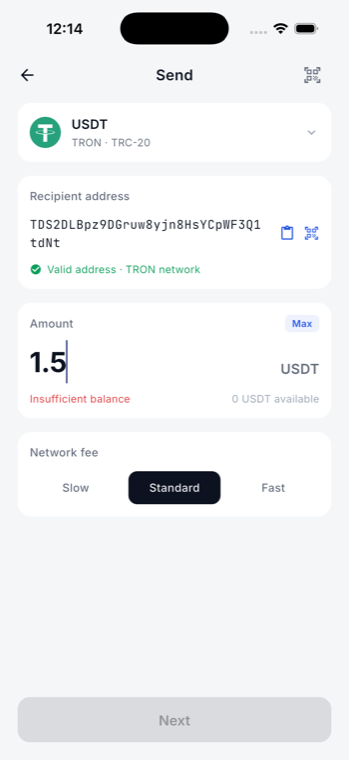
1.5 而非 01.5;地址校验 + 余额不足拦截设置
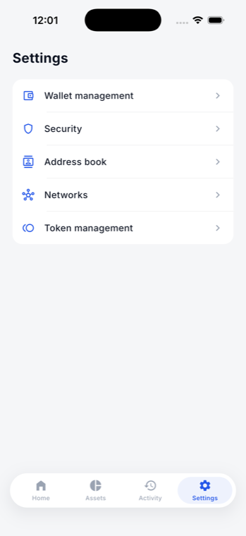
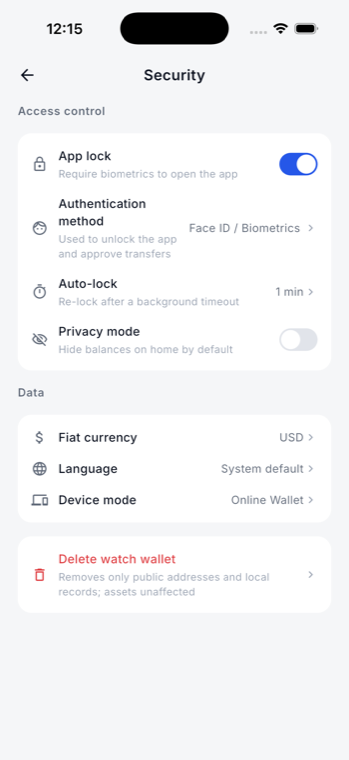
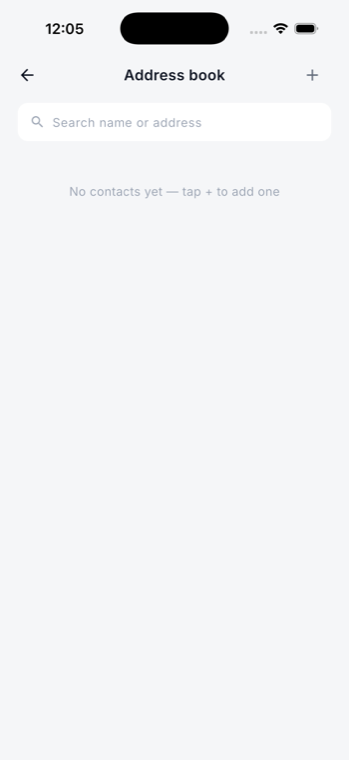
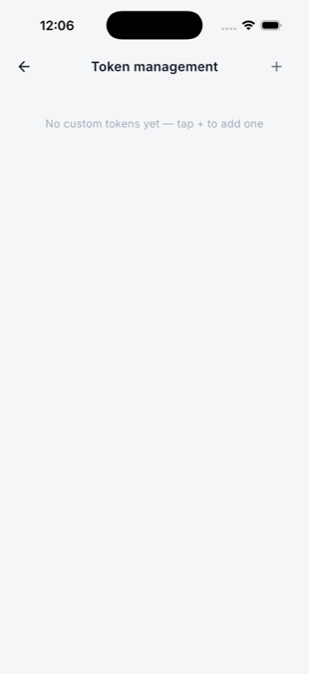
离线签名器
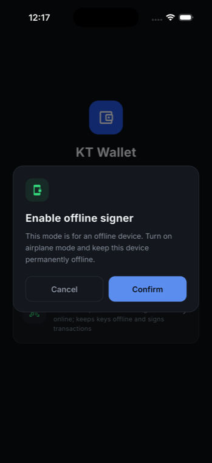
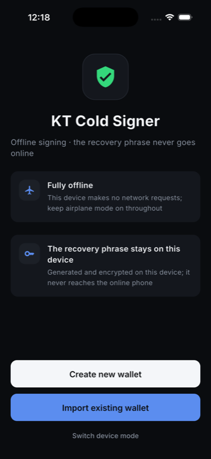
本次落地的修改
报告发出后全部修完,并在 iPhone 17 Pro 模拟器上逐项复验。
| # | 修复 | 做法 | 复验 |
|---|---|---|---|
| F-15 | 代币详情页接真实数据 | 新增 AssetRef 随路由 extra 传入;详情页按资产渲染真实余额/价格/合约,
未加载渲染 --;无资产时明说不可用;gallery/goldens 保留原快照 |
Ethereum 行 → 0 ETH / $1,955.87 |
| F-16 | RPC 延迟改真实探测 | 新增 RpcHealthController 复用既有 RpcProbe 计时;
measuring / ok(ms) / unreachable 三态;scope 缺失渲染 — 而非编造 |
7 条链各自实测,Solana 147 ms 绿色 |
| D-1 | iOS 截图/录屏缓解 | iOS 补 UIScreen.capturedDidChangeNotification;Dart 侧接住既有但此前无人监听的
kt/screen_security 通道 —— 录屏/投屏时遮蔽敏感内容(可真正拦住),
截图后弹红色警告提示立即转移资产 |
3 个 widget 测试 |
| D-2 | 鉴权时机差异 | 不是缺陷,见下方说明;两端各加注释防止被错误"对齐" | 已说明 |
| D-3 | Wallet Core 版本 | Android 4.6.13 → 4.7.0,与 iOS 一致 | 解析并构建通过 |
| F-17 | ⚖ 天平字形 | 4 处移除(两个 app × iOS + Android) | 已复验 |
setUserAuthenticationRequired(true) 创建,加密操作本身就要求
一次新鲜鉴权,所以 storeWallet 必须弹框;iOS Keychain 的访问控制只作用于读取,
写入一个用户刚刚生成的密钥无需额外提示。这是平台强制差异,不该强行统一。
真正要紧的不变量两端一致且已实测:exportMnemonic /
signTransaction / deleteWallet 永远鉴权。已在两端源码加注释,
避免后人"对齐"错方向。
修复后的界面
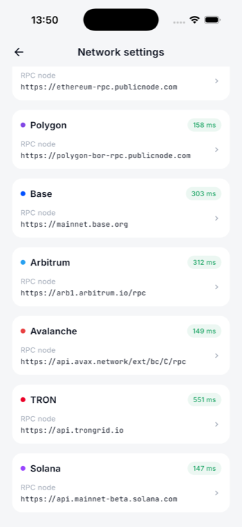
另:docs/TESTING.md 新增 §6.0 —— 签名类 E2E 必须先让设备能应答生物识别
(附 Android/iOS 的自动应答命令),以及"集成测试跑完会卸载 App"和
Solana confirmed/finalized 竞态的说明。